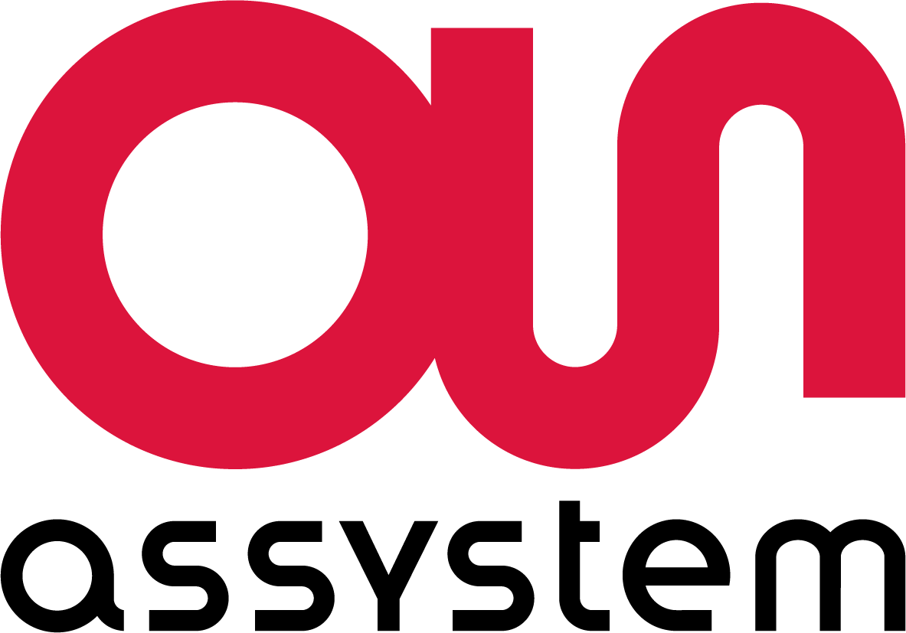
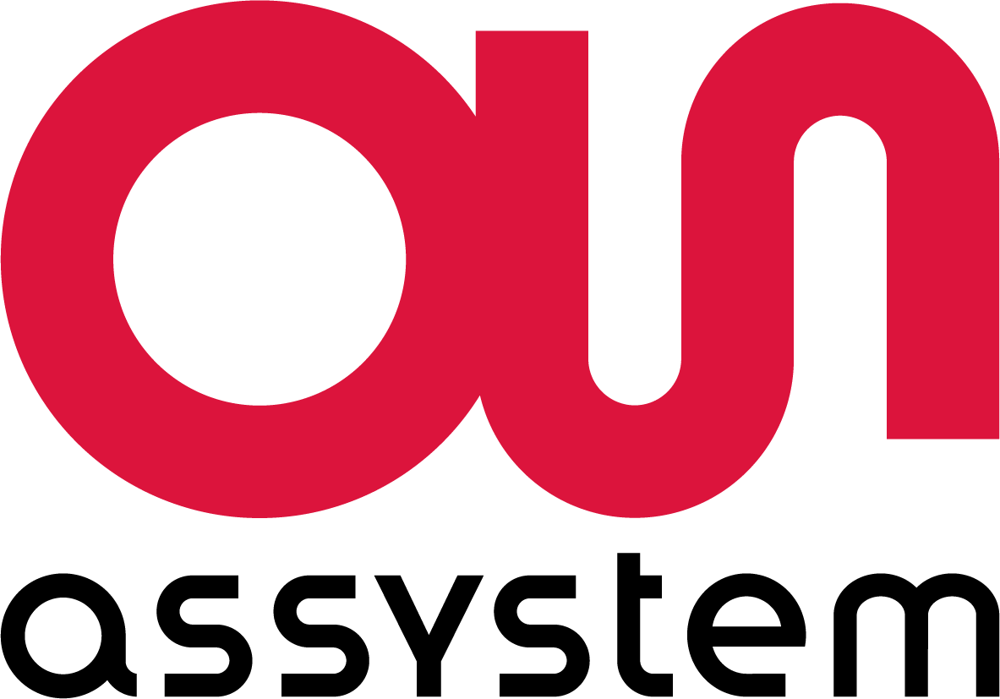

Matthis ROULEAU
Je suis
À propos de moi
Je suis Matthis Rouleau, étudiant en 3ème année de BUT GEII parcours Automatisme et Informatique Industrielle (AII) par apprentissage, passionné par la supervision et l’informatique industrielle. Je suis alternant chez Assystem depuis septembre 2024.
Étudiant en BUT GEII – Automatisme & Informatique Industrielle
Mon parcours m’a permis de développer des compétences en programmation, supervision, réseaux, systèmes embarqués et automatisme. Je suis motivé, curieux et toujours prêt à progresser et apprendre.
- 📅 Date de naissance : Juillet 2004 (20 ans)
- 📧 E-mail : matthis.rouleau@etu.univ-lyon1.fr
- 📍 Adresse : Lyon (69), France
- 📞 Téléphone : 07 86 21 00 30
- 🚗 Permis : B (véhiculé)
- 🎓 Formation : BUT3 GEII – parcours AII
- 🌐 Site Web :
- 🎯 Intérêts : Piano, Volleyball
Parcours Académique et Professionnel
Découvrez mon parcours académique et professionnel, une fusion d’apprentissage constant et d’expériences enrichissantes.
Formations
BUT - Génie Électrique et Informatique Industrielle
2022 - 2025IUT Lyon 1, Villeurbanne (69100)
Parcours AII – Automatisme et Informatique Industrielle
Baccalauréat Général
2022Lycée de la Côtière, La Boisse (01120)
Spécialité Mathématiques / Sciences de l’Ingénieur – Mention Assez Bien
Certifications
TOEIC
2025Score : 735/990 – Niveau B1
Habilitation Électrique
2025Habilitation Basse Tension (BR, BE Essai, BC, B2v Essai, H0v)
Expériences
Alternance – Technicien Informatique Industrielle
Depuis Septembre 2024Assystem, Lyon (69)
Mise à jour de vues de supervision, études et validation de systèmes de contrôle-commande.
Stage – Technicien Instrumentation & Automatisme
Avril – Juin 2024EDF CNPE Bugey, Saint-Vulbas (01)
Script PowerShell pour l’archivage des données liées à la sûreté nucléaire.
Intérim – Technicien Électronique
Étés 2023 & 2024EDAPT TMS, Vaulx-en-Velin (69)
Montage, étalonnage, tests d’impédance, soudures CMS.
Portfolio
Projets réalisés pendant le BUT.
À propos de ma poursuite d'études
Je suis heureux d’annoncer que je vais poursuivre mes études en formation d’ingénieur à ECAM Lyon, dans le parcours Systèmes Numériques et Industriels (SNI). À partir de septembre 2025, j’intégrerai cette formation en alternance, que je réaliserai au sein de l’entreprise Assystem, dans laquelle je poursuis mon contrat d’apprentissage.
 

Cette nouvelle étape représente une opportunité exceptionnelle pour continuer à développer mes compétences techniques, en me spécialisant dans les systèmes industriels, la supervision, l'automatisme et l’informatique embarquée. Je suis enthousiaste à l’idée de rejoindre ECAM, une école reconnue pour la qualité de sa formation, et de continuer à travailler chez Assystem sur des projets concrets et innovants.
Mon alternance précédente m’a permis de m’investir pleinement dans des missions de supervision, de programmation et d’études de systèmes industriels. Cette nouvelle étape me permettra de renforcer mes compétences, d’allier théorie et pratique et de me préparer à devenir un ingénieur polyvalent et responsable.
Je suis déterminé à tirer le meilleur parti de cette opportunité, et à m’épanouir professionnellement dans le secteur de l’ingénierie industrielle.
Mon CV

Contact
N'hésitez pas à me contacter !
📍 Adresse :
Lyon (69), France
✉️ E-mail :
matthis.rouleau@etu.univ-lyon1.fr
📱 Téléphone :
07 86 21 00 30